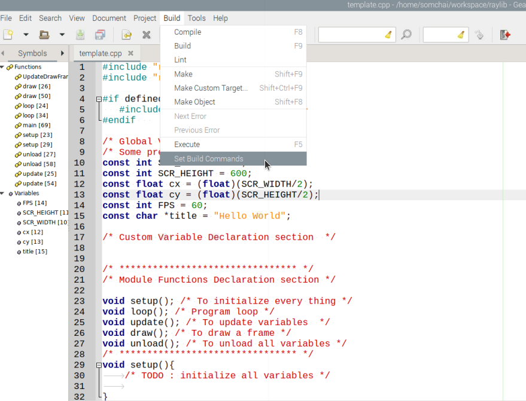
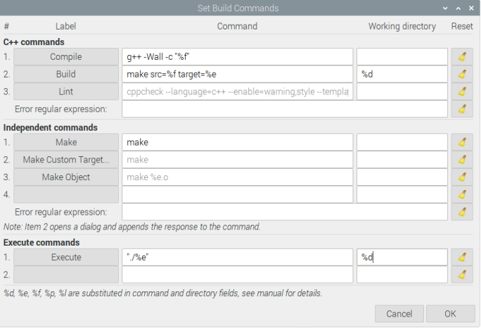
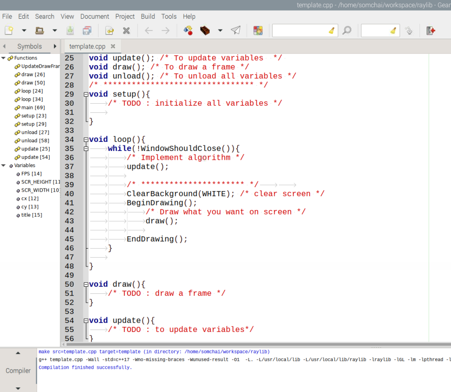

บทนำ
Computer graphics มีความน่าสนใจ
Computer graphics เป็นจุดเชื่อมของความรู้หลายสาขา เช่น computer science, engineering, art,mathematics,physics ฯล คนนำความรู้เหล่านี้มาประกอบกันเพื่อสร้างภาพมุมมองต่อ "โลก" ที่ตนกำลังมอง ทำนองเดียวกับศิลปินที่วาดภาพจากการตึความ "โลก" สิ่งที่ต่างกันคือส่งที่ถูกสร้างด้วย computer graphics คือ "digital model์" ในขณะที่ศิลปินสร้างสิ่งที่เรียกว่า "ภาพวาด" และสิ่งที่ computer graphics สามารถทำให้เกิดขึ้นได้มากกว่าคือการจำลองสถานการณ์หรือเหตุการณ์ (simulation)
การได้รับรู้หลายสาขาวิชามีความท้าทายเสมอ การตีความโลกนำมาซึ่งความคิดและมุมมองที่กว้างไกลขึ้น การสร้าง digital model และการจำลองสถานการณ์ นำมาซึ่งความสนุก สิ่งทั้งหลายเหล่านี้เกิดขึ้นได้จากการเรียนรู้ computer graphics นั่นทำให้การเรียนรู้ศาสตร์ด้านนี้มีความน่าสนใจ.
งานหลายด้านที่สามารถนำเอาความรู้ด้าน computer graphic ไปใช้ประโยชน์ ได้แก่
- การแพทย์
- วงการบันเทิง
- สถาปัตยกรรม และวิศวกรรม
- ออกแบบ เช่น Canva,Computer-Aided Design(CAD)
- วิทยาศาสตร์
- การศึกษา
- ศิลปะและวัฒนธรรม
- ฯล
เป้าหมายของโครงงานนี้
computer graphics ช่วยให้การเรียน computer coding กลายเป็นเรื่องน่าสนใจได้ ถ้าเราสามารถลดความยุ่งยากลงได้ และเรายังสามารถโยง computer graphics เข้ากับหลายเรื่องที่เป็นเรื่องของการพัฒนาการเรียนรู้ได้ เช่น ความคิดสร้างสรรค์ งานศิลปะ บันเทิง การอบรม data visualization ฯลฯ โครงงานนี้ทำขึ้นเพื่อวัตถุประสงค์ ดังกล่าว ไม่ได้พุ่งเป้าไปที่การสร้าง computer graphics coder แต่อย่างใด ดังนั้นเนื้อหาในเชิงทฤษฎีจะมีบ้างเพื่อให้เกิดความเข้าใจและโยงไปสู่การสร้าง code เท่านั้น
เครื่องมือที่เลือกใช้
โครงงานนี้เลือกใช้ ภาษา C++ เนื่องจากภาษานี้ยังคงเป็นภาษาหลักภาษาหนึ่งที่ใช้ในงานด้าน computer graphics หากท่านยังไม่มีความคุ้นเคยกับภาษานี้แต่สนใจก็สามารถศึกษาได้จากเว็บไซต์หลายๆแห่งได้ เช่น
เพื่อช่วยลดความยุ่งยากในการฝึก ผู้เขียนได้จัดทำ template.cpp ไว้เพื่อให้ง่ายต่อการทำงาน ซึ่งจะกล่าวถึงในเนื้อหาตอนต่ไป.
Library ที่ช่วยในการเขียนโปรแกรมก็มีความสำคัญ ในโครงการนี้เลือกเอา "raylib" มาใช้ ถูกพัฒนาโดยนักพัฒนาวิดีโอเกมส์ที่ใช้ชื่อบัญชีใน github ว่า raysan5. ได้รับแรงบันดาลใจมาจาก Borland Graphics Interface และ Microsoft XNA และได้ให้คำนิยามสำหรับ raylib ไว้ดังนี้.
raylib is a programming library to enjoy videogames programming. no fancy interface, no visual helpers, no gui tools or editors... just coding in pure spartan-programmers way. Are you ready to enjoy coding?
จากคำว่า "spartan-programmers" หมายถึงการใช้จำนวนชุดคำสั่งน้อยแต่ได้ประสิทธิภาพ เหมือนกับนักรบ spartan ที่มีจำนวนน้อยแต่สามารถรับมือกับ กองทัพขนาดใหญ่กว่าได้.
raylib ถูกเขียนขึ้นด้วย C99 และถูกนำไปรวม (bind) ไว้กับอีกหลายภาษา เช่น Python, C#, Lua,Go,D,Rust,Lisp ฯลฯ (ดูรายชื่อภาษาได้จากที่นี่).
คอมพิวเตอร์โดยทั่วไปมักมี processing units หลักอยู่ 2 units คือ Central Processing Unit (CPU) และ Graphics Processing Unit (GPU) หน้าที่หนึ่งของ GPU คือการกำหนดสีให้กับ pixel ทางหนึ่งที่ใช้ในการสั่งการ GPU คือการสั่งผ่าน OpenGL
Raspberry Pi ทุกรุ่นมี GPU ติดตั้งมาบนบอร์ดเรียกว่า VideoCore (บางแห่งเรียก multimedia processor) จากเอกสารประกอบทำให้ทราบว่า Raspberry Pi รุ่นตำกว่า 4 สนับสนุน OpenGL ES 2.0 และรุ่นล่าสุดสนับสนุน OpenGL 2.1
raylib รองรับ OpenGL รุ่น 1.1, 2.1, 3.3, 4.3 และ ES 2.0 . นั่นคือ raylib สามารถใช้งานบน Raspberry Pi ได้หลายรุ่น และนี่คือเหตุผลที่เลือกใช้
ความรู้พื้นฐาน
Pixel
รูปภาพที่เห็นบนจอภาพหรืออุปกรณ์แสดงผลเกิดจากการรวมตัวของหน่วยเล็กๆจำนวนมาก หน่วยเล็กๆเหล่านี้เรียกว่า pixel หรือ picture element
จำนวน pixel ที่จะมีได้ขึ้นกับจอแสดงผลและอุปกรณ์ที่เรียกว่า graphics cardจำนวน pixel ส่งผลต่อความคมชัดของภาพ
สำหรับจอแสดงผลของคอมพิวเตอร์ทั่วไปแต่ละ pixel มักเป็นรูปสี่เหลี่ยมจตุรัส แต่ละ pixel จะมี logical address logical address เฉพาะ การกระจายตัวของ pixel บนจอภาพจะอยู่ในรูปชอง grid 2 มิติ width x height หรือ columns x rows เหมือนกับตาราง เช่น 1280 x 760 หมายความว่าจะมีจำนวน pixel ในแนวนอน (columns) จำนวน 1280 pixels และในแนวตั้ง (row) 760 pixels ดังนั้นจะมีจำนวน pixels ทั้งหมด 1280 x 760 = 98,3040 pixels
หน้าที่ของ pixel คือการให้สี แต่ละ pixel แสดงค่าสีได้เพียง 1 ค่า ณ เวลาใดๆ จำนวนสีทั้งหมดที่ระบบหนึ่งจะมีได้จะขึ้นกับขนาดของข้อมูลที่กำหนดไว้ในแต่ละ pixel มีหน่วยเป็น bits per pixel (บางที่อาจเรียกว่า color depth) สมมุติว่าระบบหนึ่งใช้ bits per pixel ขนาด 8 bits จะหมายความว่าระบบนั้นสามารถแสดงผลได้ สี หรือถ้าเป็น 24 bits ก็จะสามารถแสดงสีได้ สี เป็นต้น
Coordinates
Coordinate เป็นระบบใช้ระบุตำแหน่งของ point หรือ vertice ในทางคณิตศาสตร์แล้ว pixel และ่ coordinate ไม่ใช่สิ่งเดียวกัน แต่ pixel ช่วยบอกบริเวณ (area)ที่ coordinates จะปรากฏบนหน้าจอได้
coordinates มีด้วยกันหลายระบบ ระบบที่พบได้บ่อยคือ
- Cartesian coordinates
- Polar coordinates
Cartesian Coordinates
ถูกพัฒนาโดยนักคณิตศาสตร์ชาวฝรั่งเศสชื่อ René Descartes ในช่วงศตวรรษที่ 17 เพื่อใช้เป็นตัวเชื่อมระหว่าง geometry กับ algebra การระบุตำแหน่งใช้องค์ประกอบ 3 อย่างคือ
- plane เป็นพื้นที่สมมุติ ที่ object จะวางอยู่
- Axis (แกน) ที่ตั้งฉากกัน ในระบบ 2 มิติใช้ 2 แกน X,Y ในระบบ 3 มิติใช้ 3 แกน X,Y,Z
- point ใช้ตัวเลขเต็มจำนวนเท่ากับจำนวนแกน แสดงในรูปแบบบคู่อันดับ ตัวเลขแต่ละตัวจะอิงกับจุดอ้างอิงของแต่ละแกน เรียกว่า coordinate

ใน coordinate อาจมีการระบุเครื่องหมายลบ (-) นำหน้าตัวเลข เพื่อใช้บอกทิศทางที่อิงจากจุดคงที่จุดหนึ่งเรียกว่า origin
- ถ้านำหน้าตัวเลขบน X-axis หมายถึง ตำแหน่งนั้นอยู่ทางซ้ายของ origin
- ถ้านำหน้าตัวเลขบน Y-axis หมายถึง ตำแหน่งนั้นอยู่้ด้านล่างของ origin
- ถ้านำหน้าตัวเลขบน Z-axis หมายถึง ตำแหน่งนั้นอยู่ลึกเข้าไปจาก origin
จากรูปที่ 1 และ 2 การตัดกันของแกนจะทำให้เกิดการแบ่งพื้นที่บน plane เกิดขึ้น ในแบบ 2 มิติจะได้พื้นที่ 4 ส่วน เรียกแต่ละส่วนว่า quadrant

Polar Coordinates
Polar มาจากคำว่า Pole หมายถึงขั้วหรือจุดคงที่ ต่างจากระบบ Cartesian ตรงที่การระบุตำแหน่งใช้
- ระยะห่างระหว่าง point ที่ต้องการระบุตำแหน่งกับ pole เขียนแทนด้วย หรือ
- มุมที่ทำกับแกนสมมุติเรียก polar axis (โดยทั่วไปจะใช้ X+ axis) เขียนแทนด้วย

Screen Coordinates
ตามที่กล่าวไปแล้วว่าการแสดงภาพบนหน้าจอหรือระบบแสดงผลต้องใช้ pixels ซึ่งจัดเรียงตัวในแบบตารางหรือ grid ตำแหน่งเริ่มต้นของการนับตำแหน่งคือมุมซ้ายบน เทียบกับ coordinates ในระบบ Cartesian คือ (0,0) หรือ origin
ตัวเลขตำแหน่งในแนวแกนนอนจะเพิ่มขึ้นเมื่อขยับไปทางขวาเทียบได้กับการเพิ่มขึ้นในแกน X+ ของระบบ Cartesian ตัวเลขในแนวแกนตั้งจะเพิ่มขึ้นเมื่อขยังลงมา เทียบได้กับ แกน Y+ ในระบบ Cartesian เหมือนกับการระบุตำแหน่งบนหน้าจอจะอยู่ใน quadrant ที่ 1 ของระบบ Cartesian แต่สลับบน-ล่างกัน
Color และ Color Space
การมองเห็นสีของมนุษย์คือการตีความของสมองต่อความยาวคลื่นแสงที่ตกกระทบบนเซลล์ประสาท (photoreceptor cells) ภายในดวงตาที่เรียกว่า cone cell
Cone cells มีด้วยกัน 3 ชนิดคือ
- Red sensing ตอบสนองต่อคลืนแสงช่วงสีแดง
- Green sensing ตอบสนองต่อคลืนแสงช่วงสีเขียว
- Blue sensing ตอบสนองต่อคลืนแสงช่วงสีน้ำเงิน
จากชนิดของ cone cells ที่มีอยู่ทำให้เห็นเหตุผลว่าทำไม สีแดง (Red), เขียว (Green) และ น่้ำเงิน (Blue) จึงถูกเลือกเป็นสีหลักหรือ primary colors ที่ใช้บ่อย
หลายคนคงได้เรียนรู้เรื่องการผสมสีมาแล้วเช่น เมื่อนำสีน้ำเงินผสมกับสีเหลืองจะได้สีเขียว หรือ สีแดงผสมกับสีเหลืองจะได้สีส้ม เป็นต้น หลักการนี้เกิดขึ้นได้เช่นเดียวกันในการสร้างสีที่นอกเหนือ จาก primray colors สีที่เกิดขึ้นทั้งหมดจากการผสมกันไปมาระหว่างสีที่มีอยู่แล้วเรียกว่า color space หรือ color model แต่การที่จะแสดงสีได้ทั้งหมดใน color space ได้นั้นต้องขึ้นกับระบบฮาร์ดแวร์ของระบบที่ใช้งานด้วย จำนวนสีที่สามารถแสดงได้จริงในระบบหนึ่งเรียกว่า gamut
Color spaces ที่พบได้บ่อยนอกจาก RGB
โครงสร้างข้อมูลคอมพิวเตอร์เพื่อใช้แทนค่าสีจะใช้จำนวน 3 Bytes
struct RGB {
unsigned char red;
unsigned char green;
unsigned char blue;
}
แต่ละ Byte แทนค่าสีได้ 256 ค่าสี เมื่อรวมค่าที่เป็นไปได้ทั้ง 3 Bytes จะได้ค่าสีที่เป็นไปได้ทั้งหมดใน RGB colorspace เป็น สี
การติดตั้ง Raylib บน Raspberry Pi
จะข้ามขั้นตอนการเตรียม Raspberry Pi ให้พร้อมสำหรับใช้งาน ซึ่งผุ้อ่านสามารถศึกษาเองได้จาก Raspberry Pi Documentation
สร้าง Shared libraries
จะใช้งาน raylib ต้องทำการ compile รหัสต้นฉบับ (source code)เพื่อให้ได้ shared library มา มีทางเลือก 2 ทางคือ
-
ทำตามขั้นตอนที่บอกไว้ในเอกสารจากผู้พัฒนา. หรือ
-
ใช้ shared libraries ที่ผู้เขียนก็ได้จัดทำไว้แล้วสำหรับ Raspberry Pi (ตั้งแต่ PiZero-W ไปจนถึงรุ่นล่าสุด) ที่ติดตั้งระบบปฏิบัติการ Raspberry Pi OS ซึ่งใช้ source code รุ่น 4.5.0 ดังนี้
-
ติดตั้ง system libraries
sudo apt-get install libx11-dev libxcursor-dev libxinerama-dev libxrandr-dev libxi-dev libasound2-dev mesa-common-dev libgl1-mesa-dev mesa-utils -
download shared libraries และ header files
- raylib450-rpi32.tar.gz สำหรับระบบปฎิบัติการแบบ 32 bit หรือ
- raylib450-rpi64.tar.gz สำหรับระบบปฎิบัติการแบบ 64 bit
-
สร้าง directory สำหรับ shared libraries และ header files
sudo mkdir /usr/local/lib/raylibsudo mkdir /usr/local/include/raylib -
แตกไฟลฺ์ raylib450-rpi32.tar.gz หรือ raylib450-rpi64.tar.gz
tar xzvf raylib450-rpi32.tar.gztar xzvf raylib450-rpi64.tar.gzจะพบมี directory ชื่อ include และ lib ภายในมี shared libraries และ header files อยู่
-
นำ libraylib.so.4.5.0,libraylib.so.450 และ libraylib.so ไปวางไว้ใน /usr/local/lib/raylib
sudo mv lib/*.* /usr/local/lib/raylib -
นำ header files ทั้งหมดไปวางไว้ใน /usr/local/include/raylib
sudo mv include/*.* /usr/local/include/raylib -
สร้างไฟล์ชื่อ raylib.conf ใน /etc/ld.so.conf.d/
sudo nano /etc/ld.so.conf.d/raylib.conf -
พิมพ์ข้อความ /usr/local/lib/raylib ลงใน raylib.conf แล้วทำการบันทึก (กด Ctrl-S เพื่อบันทึก แล้ว กด Ctrl-X เพื่อออกจากโปรแกรม nano)
-
แจ้งให้ system รับทราบตำแหน่งของ shared library
sudo ldconfig
-
-
เตรียมพื้นที่ทำงาน
แนะนำให้สร้าง directory สำหรับโครงงาน หรืออาจเพิ่ม sub-directory ภายในเพื่อแยกกันระหว่างส่วนที่เป็น source code และ executable ด้วยก็ได้ แล้วทำการ download 2 files ที่เตรียมไว้ให้มาเก็บไว้ใน directory ที่สร้างไว้
Makefile คือไฟล์ที่ใช้เก็บเงื่อนไขการแปลงจาก source code ไปสู่ executable หรือขั้นตอนที่เรียกว่า "build" และ template.cpp คือ ไฟล์ที่ผู้เขียนสร้างไว้เพื่อใช้เป็นต้นแบบในการสร้าง source code อื่นที่จะเรียนกันต่อไปในโครงงานนี้ต่อไป
การเตรียม Code Editor
ในโครงงานนี้ผู้เขียนจะใช้ Geany เป็น code editor (ท่านสามารถเลือกใช้ตัวอื่นได้ความถนัด) เนื่องจากเป็น text editor ที่ติดตั้งมาพร้อมใช้งานกับ Raspberry Pi OS ทุกรุ่นอยู่แล้ว อีกทั้ง Geany สามารถถูกปรับแต่งให้สามารถเรียกใช้ compiler และ run program ที่ได้ โดยไม่ต้องเปิดหน้าต่างเพื่อเรียกใช้ command ซึ่งก็ให้ความสะดวกเพียงพอแล้ว.
- เรียก Geany เปิดไฟล์ template.cpp ที่ดาวน์โหลดมาก่อนหน้า เพื่อให้ Geany รับทราบว่าไฟล์ที่กำลังใช้งานเป็นไฟล์ C++ แล้วคลิ๊ก Build บนเมนูบาร์เพื่อเรียกใช้ "Set Build Commands" ดังภาพ

- มองหา Build (ในคอลัมน์ Label) ในส่วนของ C++ commands พิมพ์ข้อความ make src=%f target=%e ในช่องตรงกลาง (คอลัมน์ Command) และ %d ในช่องที่ 3 (คอลัมน์ Working directory) ในส่วนของ Execute commands ให้เติม ./%e ในช่องตรงกลางและ %d ใ่นช่อง working directory แล้วคลิ๊ก OK

- ทดสอบโดยการกด F9 หรือ คลิ๊ก Build -> Build จากเมนูบาร์เพื่อการ build (การแปลงชุดคำสั่งให้กลายเป็น executable file) หากการติดตั้งทุกอย่างถูกต้องจะได้เห็น ข้อความ "Compilation finished successfully." ใน message window

- ในกรณีไม่สามารถ Build ได้ และพบข้อความบน Message Window Makefile:23 missing separator. Stop

ทำการแก้ไขดังนี้
- เปิด Makefile ด้วย Geany
- เลื่อนไปที่บรรทัด 23 เลื่อน cursor ไปที่หน้าอักษรตัวแรกของบรรทัดแล้วทำการเคาะแป้น Tab 1 ครับ เพื่อเพิ่มอักขระ tab เข้าไปข้างหน้าสุดของบรรทัด บันทึก
- กลับไปลอง Build ไฟล์ template.cpp อีกครั้ง ถ้ายังไม่ได้ผลให้สำรวจดูว่ามีการเติมอักขระ tab เข้าไปข้างชุดคำสั่งแล้วหรือไม่
รู้จักกับ template.cpp
template.cpp ได้ถูกกล่าวถึงในเรื่อง การติดตั้ง raylib on Raspberry Pi มาแล้ว ในตอนนี้จะกล่าวถึงรายละเอียดภายใน
ไฟล์นี้ถูกสร้างเพื่อใช้เป็นแนวทางในการเขียนโปรแกรมกับ raylib โครงสร้างหลักมี 3 ส่วนคือ header files, variable declaration และ functions
graph TD;
template.cpp --> header_files;
template.cpp --> variable_declarion;
template.cpp --> function_declaration;
ส่วนของ header files จะถูกประกาศไว้แล้ว 2 files คือ raylib.h และ raymath.h เป็น header ที่ใช้สำหรับงาน graphics ผู้ใช้สามารถเพิ่ม header files ที่ต้องการเพิ่มได้เอง
graph TD;
header_files --> raylib.h;
header_files --> raymath.h;
ตัวแปร (variables) ที่ถูกประกาศไว้เบื้องต้นคือ
- SCR_WIDTH และ SCR_HEIGHT เป็นตัวแปรประเภท integer แทนค่าความกว้างและความสูงของ screen ที่ใช้แสดงผล ตามลำดับ
- cx,cy เป็นตัวแปรประเภท integer แทนตำแหน่ง (coordinates) จุดตรงกลางของ screen
- FPS เป็นตัวแปรประเภท integer แทนอัตราเร็วของการวาด (frame per second) ตั้งไว้ที่ 60 fps
- title เป็นตัวแปรประเภท pointer แทนข้อความแสดงบน title bar
ผู้ใช้สามารถเพิ่มหรือปรับแต่งค่าตัวแปรให้เหมาะสมกับการใช้งานได้
graph TD;
variable_declaraion --> SCR_WIDTH
variable_declaraion --> SCR_HEIGHT
variable_declaraion --> cy
variable_declaraion --> cx
variable_declaraion --> FPS
variable_declaraion --> titile
การทำงานของโปรแกรมถูกแบ่งออกเป็น 5 functions ดังนี้
- setup ใช้ในการกำหนดค่าเริ่มต้นให้กับตัวแปรที่ประกาศไว้ในส่วนของ variable declaration
- update ใช้ในการปรับแต่งค่าตัวแปรในระหว่างที่โปรแกรมทำงาน
- draw ใช้ในการวาดบนหน้าจอ เป็นส่วนที่ใช้ชุดคำสั่งของ raylib
- loop คือ main loop ของโปรแกรม โดยแต่ละรอบการทำงานจะไปเรียกใช้ update และ draw
- unload ใช้ล้างค่าของตัวแปรก่อนที่จะหยุดโปรแกรม
graph TD;
functions --> setup;
functions --> update;
functions --> draw;
functions --> loop;
functions --> unload;
Flow chart แสดงขั้นตอนการทำงานของโปรแกรมแสดงตามภาพข้างล่างนี้
flowchart TD;
start --> id2(variable declartion)-->id3(function declaration)-->id4(setup function)
id4(setup function)-->id5(update function)-->id6(draw function)-->id7{exit loop}-- NO -->id5(update function)
id7{user press Esc to exit loop ?}-- YES -->id8(unload function)-->stop
Hello World Window
เริ่มต้นทำความคุ้นเคยกับ raylib และการเปลี่ยน template.cpp ให้เป็นโปรแกรมที่ต้องการ ด้วยการสร้าง application window ที่มี title ว่า "Hello World".
-
เปิด template.cpp ด้วย Geany แล้วบันทึกลงในชื่อใหม่เป็น "HelloWorld.cpp"
-
เพิ่มเติมชุดคำสั่งลงใน HelloWold.cpp ดังนี้
- เพิ่ม string header file ในบรรทัดที่ 3 เพื่อให้สามารถใช้ตัวแปรประเภท string ได้ ซึ่งต้องใช้สำหรับการแสดงข้อความที่เป็นตัวอักษร

- เพิ่ม variables ในบรรทัดที่ 19-23 คือ
- txt เป็นตัวแปรประเภท string
- posX และ posY เป็นประเภท integer ใช้กำหนดตำแหน่งที่จะแสดงข้อความ
- fontSize เป็น integer ใช้บอกขนาดของตัวอักษร
- clr เป็นตัวแปรประเภทโครงสร้างชื่อ Color ใช้กำหนดค่าสีของตัวอักษร

-
เพิ่ม function ในบรรทัดที่ 57
``DrawText(const char *text, int posX, int posY, int fontSize, Color color) ``function นี้ถูกประกาศไว้ใน raylib.h ใช้แสดงข้อความบนหน้าจอ ต้องการ parameter 5 ตัวคือ ข้อความ, coordinate X, coordinate Y , ขนาดตัวอักษร และ สีของข้อความ ซึงเราจะนำค่าของตัวแปรที่ประกาศไว้ก่อนหน้า นี้มาใช้

- บันทึกแล้วทำการ build ด้วยเมนูบาร์ Build หรือ กดแป้น F9

- รอจนการ build สำเร็จ จะพบข้อความบน Message Window

- Execute โปรแกรมที่ได้ด้วยเมนูบาร์ Execute หรือกดแป้น F5

- การแสดงผลของโปรแกรม

- กดแป้น Esc เพื่อออกจากโปรแกรม และแป้น Enter อีกครั้งเพื่อปิดหน้า virtual terminal และกลับสู่ Geany
RGB Color Space Window
โปรแกรมนี้จะเป็นต่อยอดจาก Hello World Window โดยนำเรื่องของ RGB Color Space มาใช้เพื่อตกแต่งพื้นหลังของโปรแกรม
ข้อมูลทางเทคนิค
โครงสร้างข้อมูลที่ถูกประกาศไว้ใน raylib.h เพื่อใช้กำหนดสีให้กับ pixel เป็นดังนี้
typedef struct Color {
unsigned char r; // Color red value
unsigned char g; // Color green value
unsigned char b; // Color blue value
unsigned char a; // Color alpha value
} Color;
นอกจากค่าสีของ red, green และ blue แล้ว สิ่งที่เพิ่มเข้ามาคือค่าของ alpha ใช้บอกระดับความสว่าง ค่าความสว่างมีผลต่อการมองเห็น ถ้าค่าความสว่างมากของสีก็จะออกไปทางสีขาว ในทางตรงข้ามก็จะทำเห็นสีออกไปทางสีดำ
function ที่จะใช้ในโปรแกรมนี้คือ
void DrawPixel(int posX, int posY, Color color)
ใช้กำหนดค่าสีให้กับ pixel ที่อยู่ในตำแหน่ง posX, posY ด้วยค่าสีที่กำหนดให้กับ color
การทำงานของโปรแกรม
ในโปรแกรมนี้จะทำการกำหนดค่าสีของแต่ละ pixel โดยใช้ตำแหน่งของ pixel มาช่วยในการคำนวณหาค่าสี การหาตำแหน่งจะใช้ loop ไล่ไปทีตำแหน่งจากซ้ายไปขวา จากบนลงล่าง
flowchart TD;
start-->id1(x=0,a=255,b=255);
id1-->id2{x > SCR_WIDTH ?};
id2 -- NO -->id3(y=0)
id2-- YES -->id11(clean up)
id3-->id4{y > SCR_HEIGHT ?};
id4 -- NO -->id5(r = 255 * x/SCR_WIDTH);
id4-- YES -->id10(x = x+1)
id5-->id6(g = 255 * y/SCR_HEIGHT);
id6-->id7(create color from r,g,b,a);
id7-->id8(DrawPixel with parameters : x, y, color );
id8-->id9(y = y+1)
id9-->id4
id10-->id2
id11-->stop
-
เปิด template.cpp ด้วย Geany แล้วบันทึกลงในชื่อใหม่เป็น "rgb-window.cpp" (ใช้ชื่ออ่านก็ได้)
-
กำหนดขนาดหน้าจอ โดยให้ตัวเลขที่หารด้วย 256 ลงตัว ในตัวอย่างนี้ใช้ 512 เปลี่ยนข้อความสำหรับ Title Bar เป็น "RGB Color Space"
const int SCR_WIDTH = 512; const int SCR_HEIGHT = 512; ... const char *title = "RGB Color Space"; -
โปรแกรมนี้จะไม่ใช้ global variables ดังนั้จะไม่มีการเขียน code ใน setup()
-
ไปที่ draw() เพื่อทำการเขียนชุดคำสั่งสำหรับการวาด
4.1 จาก flow chart ข้างบน จะมีการวน loop สองชั้น (เพื่อเลื่อนตำแหน่งจากซ้ายไปขวา และจากบนลงล่าง)
for(int x = 0;x < SCR_WIDTH;x++){ for(int y = 0;y < SCR_HEIGHT;y++){ .... } }4.2 คำนวณค่าสีจากค่า x,y และประกาศตัวแปรสำหรับเก็บค่าสี
unsigned char r = (unsigned char)(255 * x/SCR_WIDTH); unsigned char g = (unsigned char)(255 * y/SCR_HEIGHT); Color clr = (Color){r,g,255,255};4.3 นำตัวแปรทั้งหมดไปกำหนดค่าสีให้กับ pixel ที่ตำแหน่ง (x,y)
DrawPixel(x, y, clr);4.4 ชุคคำสั่งสำหรับการวาดจะเป็น
void draw(){ for(int x = 0;x < SCR_WIDTH;x++){ for(int y = 0;y < SCR_HEIGHT;y++){ unsigned char r = (unsigned char)(255 * x/SCR_WIDTH); unsigned char g = (unsigned char)(255 * y/SCR_HEIGHT); Color clr = (Color){r,g,255,255}; DrawPixel(x, y, clr); } } }4.5 บันทึกแล้วทำการ build (เหมือนกับ HelloWorld) ถ้าไม่พบข้อผิดพลาด กด F5 เพื่อดูการแสดงผล

- ทดลองเปลี่ยนวิธีการคำนวณค่าสีจากชุดคำสั่งในข้อ 4.4 ดุ จะได้ผลลัพธ์ที่ต่างกันออกไป รูปตัวอย่างที่ผู้เขียนทดลองเอง

| |
| |
รูปร่างเชิงเรขาคณิต (Basic Geometry Shapes)
รูปร่างเป็นพื้นฐานสำคัญทางด้าน graphics รูปร่างมีอยู่ทุกหนแ่หงในธรรมชาติ ทุกสิ่งที่เรามองเห็นมีรูปร่าง ความหมายทางเรขาคณิตบอกว่า รูปร่าง (shape) หรือ รูป (figure) คือรูปแบบปิด (closed form) ที่ประกอบด้วย จุด (piont), เส้น (line) , มุม (angle) และ พื้นผิว (surface) รูปร่างเชิงเรขาคณิตที่พบได้บ่อยได้แก่
- Square, Rectangle
- Circle
- Triangle
- Polygons
เรขาคณิตเบื้องต้น (Basic of Geometry)
-
จุด (point) คือตำแหน่งบน plane ไม่มีขนาด ใช้ coordinate system ในการระบุตำแหน่งของจุด
-
เส้นตรง (line) คือเซตของจุดที่ต่อเนื่องกัน โดยที่ coordinates ของทุกจุดจะต้องเป็นไปตาม linear equation () อันใดอันหนึ่ง(ผู้เขียนสรุปเอง) ในเชิงทฤษฎีเส้นตรงไม่มีจุดเริ่มต้นและจุดสิ้นสุด แต่ในการวาดเส้นตรงบนหน้าจอจำเป็นต้องมีจุดเริ่มต้นและสิ้นสุด ดังนั้นส่วนใหญ่แล้วมักจะกล่าวถึง ส่วนของเส้นตรง (line segment)
-
ray เพื่อให้เข้าใจความหมายของคำนี้ ลองนึกถึงแสงจากดวงอาทิตย์ (sun ray) มีจุดกำเนิดที่ดวงอาทิตย์ แต่จุดสิ้นสุดถือว่าไม่มี นั่นคือ ray เป็นรูปส่วนหนึ่งของเส้นตรงที่มีจุดเริ่มต้นแต่ไม่มีจุดสิ้นสุด ซึ่งต่างจาก line segment
-
มุม (angle) เกิดจาก 2 ray ที่มีจุดกำเนิดร่วมกัน (vertex of angle) การวัดขนาดของมุมนิยมใช้กัน 2 หน่วยคือ degree และ radians
เส้นตรง
สมการเส้นตรง
เส้นตรงอาจไม่นับว่าเป็นรูปร่าง แต่ก็เป็นจุดเริ่มต้นของการสร้างรูปร่าง ก่อนจะเข้าสู่เรื่องของการวาด มาทำความรู้จักกับสมการเส้นตรง (linear equation) ก่อน ในโลก 2 มิติอยู่ในรูป
เมื่อ m คือความชัน (slope) ของเส้นตรง หรือ อัตราการเปลี่ยนแปลงของ y ต่อการเปลี่ยนแปลงของ x เพื่อให้เห็นภาพอาจเทียบกับภาพ การก้าวและยกของไปพร้อมกัน ทุกครั้งที่ก้าว 1 ่ก้าว (step) ก็จะยกของขึ้นสูง 1 หน่วย (raise) ถ้าก้าวไปเรื่อยๆ ของก็จะถูกยกสูงขึ้นเรื่อยๆ ดังนั้นเราพิจารณาว่า ความชันก็คืออัตราส่วนระหว่าง raise กับ step ก็ได้

การคำนวณหาค่าความชันจำเป็นต้องทราบ coordinate ของจุดบนเส้นตรงอย่างน้อย 2 จุด สมมุติให้เป็น จะได้
แทนค่า m ใน (1.0)
ตัวแปร c เป็นค่าของ y เมื่อ x มีค่าเป็น 0 สามารถหาได้โดยการปรับแต่งสมการ (1.3) ในสมการ (1.4) มีสิ่งที่เรียกว่า trick อยู่ 2 ประเด็นคือ
- ยังคงเป็นค่าคงที่ ในทางคณิตศาสตร์แล้ว สามารถเขียนแทนด้วย ได้ ความหมายไม่เปลี่ยนแปลง
- หากแทนค่า ด้วย หรือ ก็ยังทำให้สมการเป็นจริง
ดังนั้นหากเลือกเอา ไปแทน สมการ (1.4) สามารถถูกเขียนใหม่ได้เป็น
นำ(1.5) ไปแทนค่าใน (1.3) จะได้
จากสมการ (1.6) ถ้ากำหนดให้จุดเริ่มต้นของ line segment เป็น และจุดสิ้นสุดเป็น และกำหนดชุดตัวเลขสำหรับค่าของ x ก็จะสามารถ คำนวณหาค่าของ y เพือนำมาใข้เป็นตำแหน่งของจุดเพื่อวาดเส้นตรงได้
วาดเส้นตรงจากสมการ
โดยการนำเอาสมการ (1.6) มาคำนวณค่าตำแหน่งของ pixel ทีละ pixel
flowchart TD;
start-->id1(กำหนดจุดเริ่มต้น x1,y1);
id1-->id2(กำหนดจุดสิ้นสุด x2,y2);
id2-->id3(x = x1);
id3-->id4{x>x2?};
id4-- NO -->id5(คำนวณ y ตามสมการ 1.6);
id5-->id6(DrawPixel บน coordinate x,y);
id6-->id7(x = x+1);
id7-->id4;
id4-- YES -->id8(cleanup);
id8-->stop;
เขียน code
-
เปิดไฟล์ template.cpp แล้วบันทึกเป็น line.cpp
-
แก้ไป title เป็น "Draw Line Segment"
const char *title = "Draw Line Segment"; -
เพิ่มชุดคำสั่งใน function draw()
void draw(){ /* TODO : draw a frame */ int x1 = 0; int y1 = 0; int x2 = 500; int y2 = 500; int y; Color clr = WHITE; for(int x = x1;x<x2;x++){ y = (int)(x * (y2 - y1)/(x2 - x1) + x2*y1 - x1*y2); DrawPixel(x,y,clr); } } -
เพื่อให้เห็นภาพชัดขึ้นให้แก้ค่าสีพื้นหลังในบรรทัดที่ 40 จากเดิมกำหนดเป็น WHITE ให้เป็นสีเข้มขึ้นหรือดำ
ClearBackground(BLACK); -
บันทึกแล้วทำการ build
การวาดหรือ plot ด้วย algorithm แบบนี้ดูเหมือนจะใช้ได้ แต่หากทดลองเปลียนค่าความชัน () หลายๆค่า จะพบว่า ลักษณะของเส้นที่ปรากฏบางครั้งไม่ได้เป็นไปในแบบที่พอจะเรียกว่าเส้นตรง เช่น
-
ความชันที่ทำให้เส้นตรงออกมาดูเป็นเส้นตรงจะอยู่ใกล้ๆกับ 1 ถ้าคิดเป็นค่าของมุมคือ 45 degrees หรือ radians
-
เมื่อความชันของเส้นตรงมีค่าน้อยๆ ( )เส้นจะราบลงใกล้กับแนวนอน ภาพที่ออกมาจะมีลักษณะคล้ายกับบรรได เกิดการซ้ำของตัวเลขบนแกนนอนมากกว่าบนแกนตั้ง

- เมื่อความชันมีค่ามากๆ ( )จะพบว่ามีการกระโดดของ pixel เกิดการซ้ำของตัวเลขบนแกนตั้งมากกว่าบนแกนนอน

ดังที่กล่าวไว้ก่อนหน้าว่า pixel กับ point ไม่ใช่สิ่งเดียวกัน ตำแหน่งของ pixel ช่วยกำหนดบริเวณที่ point จะปรากฏบนหน้าจอได้ แต่ไม่ใช่ coordinates ของ point (บางท่านอาจเคยได้ยินประโยค If it seems right, it is right ) เพราะตัวเลข coordinates ของ point เป็นเลขจำนวนจริง ในขณะที่ตำแหน่งของ pixel เป็นจำนวนเต็ม การปรับแต่งตัวเลขจากจำนวนจริงไปเป็นจำนวนเต็มทำให้เกิดการเสียข้อมูลไปบางส่วน
สาเหตุเพระด้วยปัญหานี้จึงได้มีการพัฒนา algorithm ขึ้นมาเพื่อให้การวาดเส้นตรงดูเหมือนเส้นตรงมากขึ้น
Bresenham's algorithm
Algorithm ถูกพัฒนาโดย Jack Elton Bresenham ในปี ค.ศ. 1962
flowchart TD;
start-->id1(รับค่า );
id1-->id2(คำนวณ );
id2-->id3(คำนวณ );
id3-->id4(คำนวณ dicision parameter );
id4-->id5();
id5-->id6{x > x_2};
id6--NO-->id7(plot pixel at x,y)
id6--YES-->stop;
id7-->id8{p_k > 0 };
id8--YES -->id9(increase or decrease y by 1 );
id9-->id10( );
id8--NO-->id11();
id11-->id13();
id10-->id13;
id13-->id6;
เขียน code
-
เปิดไฟล์ template.cpp แล้วบันทึกเป็น bresenham_line.cpp
-
เพิม header file ชื่อ vector เพื่อให้สามารถใช้ dynamic array (vector)
#include <vector> -
แก้ไข title เป็น "Draw Line Segment"
const char *title = "Draw Bresenham Line"; -
ประกาศตัวแปรเพิ่มเติม
struct POINT{ int x; int y; }; POINT start = (POINT){0,0}; POINT end ; std::vector<POINT> points;- POINT เป็นการประเภทตัวแปรประเภทโครงสร้าง มี 2 elements คือ x,y
- start ใช้เก็บ coordinates เริ่มต้นของ line segment
- end ใช้เก็บ coordinates สุดท้ายใน line segment
- points เป็นตัวแปรใช้เก็บ coordinates ของ pixels ทั้งหมดใน line segment
-
เพิ่ม function declaration
std::vector<POINT> bresenham(int,int,int,int); -
เขียนชุดคำสั่งต่อไปนี้ใน draw()
void draw(){ /* TODO : draw a frame */ if(IsMouseButtonPressed(MOUSE_BUTTON_LEFT)){ start.x = GetMouseX(); start.y = GetMouseY(); }else if(IsMouseButtonPressed(MOUSE_BUTTON_RIGHT)){ end.x = GetMouseX(); end.y = GetMouseY(); } ps = bresenham(start.x,start.y,end.x,end.y); for(auto elm : ps){ DrawPixel(elm.x,elm.y,WHITE); } }การทำงานภายใน draw() คือ หากมีการคลิ๊กแป้นซ้ายของ mouse โปรแกรมจะทำการนำค่าของตำแหน่งของ mouse pointer บันทึกไว้ในตัวแปร start
หากมีการคลิ๊กแป้นขวาของ mouse โปรแกรมจะทำการนำค่าตำแหน่งของ mouse pointer บันทึกลงในตัวแปร end จากนั้นจะส่งค่าเหล่านั้นให้กับ bresenham เพื่อ สร้างเป็น vector ของจุดที่จะนำมาสร้าง line segment ที่เริ่มจาก start end -
เขียนชุดคำสั่งให้กับ function bresenham ตาม flow chart ที่เขียนไว้ก่อนหน้า function นี้รับ input เป็นตัวเลข 4 ตัว แทนตำแหน่งของจุดเริ่มต้นและจุดสิ้นสุดของ line segment แล้วส่งค่ากลับออกมาเป็น vector ของ coordinates ทั้งหมดบน line segment (ตำแหน่งของ function นี้สามารถอยู่ตรงไหนก็ได้)
std::vector<POINT> bresenham(int x1,int y1,int x2,int y2){ std::vector<POINT> ps; int dx = abs(x2-x1); int dy = abs(y2-y1); bool slope = dy > dx; int tmp; if(slope){ // slop > 1 : swap x1,y1 and swap x2,y2 tmp = x1; x1=y1; y1=tmp; tmp = x2; x2=y2; y2=tmp; } if(x1>x2){ tmp = x1; x1=x2; x2=tmp; tmp = y1; y1=y2; y2=tmp; } dx = abs(x2-x1); dy = abs(y2-y1); int pk = 2*dy - dx ; int y = y1; int ystep = (y1<y2)?1:-1; for(int x = x1;x<=x2;x++){ if(slope){ ps.push_back((POINT){y,x}); }else{ ps.push_back((POINT){x,y}); } if(pk>0){ y+=ystep; pk += 2*(dy-dx); }else{ pk+=2*dy; } } return ps; } -
บันทึกแล้วทำการ build เมื่อทำการ execute จะได้ผลตามวิดีโอ
จากวิดีโอทำให้เห็นว่า Bresenham's algorithm มีประสิทธิมากพอที่ทำให้ภาพที่ออกมาดูเป็นเส้นตรงมากกว่าการวาดแบบ naive ในตอนที่กล่าวถึงก่อนหน้า algorithm ที่ใช้ plot เส้นตรงมีมากว่าที่กล่าวมา ดูได้จาก ที่เลือกเอา Bresenham มากล่าวไว้ ก็เพราะจัดเป็น algorithm ที่มีประสิทธิภาพสูงและง่ายในการทำความเข้าใจ
Raylib's draw line functions
raylib มี function สำหรับการวาดเส้นตรงอยู่ 3 functions ดังนี้
-
function ที่ทำงานเหมือนกับตอนที่กล่าวถึงเรื่อง Bresenham's algorithm แต่เพิ่มเรื่องการระบุสีของเส้น คือ
void DrawLine(int startPosX, int startPosY, int endPosX, int endPosY, Color color) -
function ที่ทำงานเหมือนกับข้อแรก แต่เปลี่ยนวิธีการระบุตำแหน่งเป้นตัวแปรแบบ Vector2 แทน int
void DrawLineV(Vector2 startPos, Vector2 endPos, Color color) -
function ที่ทำงานเหมือนกับข้อ 2 แต่เพิ่มการระบุความหนาของเส้นได้
void DrawLineEx(Vector2 startPos, Vector2 endPos, float thick, Color color)
function ทั้งสามนี้สามารถนำไปแทนที่ function bresenham ที่เขียนไว้แล้วในตอนที่แล้วได้ ดังนั้นการเขียน code ในส่วนนี้จะทิ้งไว้เป็นการบ้านสำหรับผู้อ่าน
วงกลม
วงกลม (circle) คือเซตของจุดที่อยู่ห่างจากจุดคงที่จุดหนึ่งเรียกว่า จุดศูนย์กลาง (center) เป็นระยะทางเท่ากัน เรียกระห่างนี้ว่า รัศมีวงกลม (radias) เซตของจุดที่เรียงต่อกันทำให้เห็นสิ่งที่เรียกว่า เส้นรอบวง (circumference)
จากความหมายดังกล่าว เราจึงสามารถเขียนสมการวงกลมเพื่อใช้เป็น function ในการสร้างเซตของจุดของวงกลมได้ 2 รูปแบบคือ
- รูปแบบของ polynomial
- รูปแบบของ polar coordinates
รูปแบบของ polynomial
พิจารณารูปที่ 1 วงกลมมีจุดศูนย์กลางอยู่ที่ (w,h) มีรัศมีเป็น และจุด (x,y) แทนจุดใดๆ บนเส้นรอบวง จะสังเกตุได้ว่ามีรูปสามเหลี่ยมมุมฉากที่ล้อมด้วยด้าน a,b,r อยู่
จากทฤษฎีบทของพิธากอรัส (Pythagorian theorem) จะได้
เราทราบว่า
ดังนั้น
รูปแบบของ polar coordinates
เราได้ทราบจาก "ความรู้พื้นฐาน" ว่า polar coordinates ใช้การระบุระยะทาง () และ มุม () เพื่อบอกตำแหน่งของจุด ดังนั้นทุกจุดบน เส้นรอบวง จะถูกระบุด้วย coordinates เมื่อ มีค่าระหว่าง

ข้อดีของระบบ polor coordinate คือการได้ค่าของตำแหน่งจุดที่ละเอียดเพราะค่ามุมเป็นจำนวนจริง แต่ในระบบการวาดบนหน้าจอต้องใช้เป็น coordinates แบบ Cartesian และใข้ตัวเลขเป็นจำนวนเต็ม ดังนั้นจึงต้องมีการเปลี่ยนค่าตำแหน่งจาก *polar coordinates ไปเป็น cartesian coordinate ก่อนทำการวาดบนหน้าจอ
การเปลี่ยนค่าจาก polar coordinates เป็น cartesian coordinates
ดูรูปที่ 3 ถ้าจุดสีฟ้าคือ pole และจุดสีแดงคือจุดใดๆ มี polar coordinate เป็น เราสามารถสร้าง ที่มีขนาด (magnitude)คือ ได้
สร้างสามเหลี่ยมมุมฉากสมมุติขึ้นมาโดยมีด้านประกอบเป็น r,a,b ตามรูปที่ 3 จะได้ว่า
จาก (1.2) และ (1.3) บอกว่าจุดที่ คือจุดที่มีระยะ่ห่างจากจุด pole ในแนวนอน (x axis) เป็น และระยะทางในแนวตั้ง (y axis) เป็น นำมาเขียนในระบบ cartesian coordinate คือ
ตัวอย่าง ถ้าให้ p มี polar coordinate เป็น (10,0.524 rad) จงเปลี่ยนให้เป้น cartesian coordinate
ให้ (x,y) แทน cartesian coordinate ของ p ดังนั้น cartesian coordinate ของ p เป็น (8.66,5.00)
เนื่อหาในตอนต่อไปจะกล่าวถึง algorithm ที่ใช้วาด(plot)วงกลมบนจอภาพ การนำเอานิยามวงกลมก็สามารถที่จะวาดวงกลมได้ อาจเรียกแบบนี้ว่า naiv method ก็ได้ แต่ก็มีข้อที่ต้องพิจารณา คือการคำนวณต้องใช้ตัวแปรประเภท float หรือ double ซึ่งมีผลต่อความเร็วในการคำนวณ ถัดไปจะกล่าวถึง algorithm ที่พัฒนาขึ้นมาและใช้งานกันได้แก่ midpoint algorithm และ Bresenham algorithm ซึ่งใช้การคำนวณด้วยตัวแปรประเภท integer ซึ่งมีความเร็วที่ดีกว่าแบบ naiv และสุดท้ายจะกล่าวถึง function ที่มีอยู่ของ raylib ที่นอกจากจะวาดวงกลมแล้วมียังสามารถใช้วาดรูปที่เหมือนวงกลม เข่น วงแหวน ได้ด้วย
การวาดวงกลมจากสมการวงกลม
เป็นการถอดนิยามของวงกลมจากบทก่อนหน้าไปเป็น code เพื่อวาดเป็นวงกลม วิธีการแบบนี้อาจเรียกเป็น naiv method ก็ได้
จากสมการ polynimial
จาก (1.1) เราทราบว่า
- ค่าคงที่คือ h,w และ r เมื่อ h และ w ตือ oridate y และ oridate x ของจุดศูนย์กลางวงกลม r คือค่าความยาวรัศมีวงกลม
- input คือ x มีค่าระหว่าง ถึง
algorithm
flowchart TD;
start-->id1(รับค่า w,h,r,color);
id1-->id2(x = w - r);
id2-->id3[compute y];
id3-->id4(plot pixel at x,y);
id4-->id5(x = x+1);
id5-->id6{x>w+r ?};
id6--Yes --> stop;
id6--No -->id3;
จากระบบ polar coordinate
algorithm
flowchart TD;
start-->id1(รับค่า w,h,r,color);
id1-->id2(angle = 0);
id2-->id3["x = r * cos(angle)\n y = r * sin(angle)"];
id3-->id4(plot pixel at x,y);
id4-->id5(increase angle);
id5-->id6{angle >360 ?};
id6--Yes --> stop;
id6--No -->id3;
เขียน code
-
เปิดไฟล์ template.cpp แล้วบันทึกเป็น circle_naiv.cpp
-
เพิ่ม header file และแก้ไข title
#include <cmath> -
เพิ่ม function declaration
void draw_circle_poly(int,int,int,Color); void draw_circle_polar(int,int,int,Color); -
ใส่ชุดคำสั่งให้กับ function ในข้อ 3 โดยอิงข้อมูลในรูปที่ 2 และ flowchart
void draw_circle_poly(int cx,int cy,int radias ,Color clr){ for(int x = cx-r;x<=cx+r;x++){ float tmp = sqrt((radias + x - cx)*(radias - x + cx)); float y = tmp+cy; DrawPixel((x,(int)y,clr); } } void draw_circle_polar(int cx,int cy,int radias ,Color clr){ for(float a = 0.0f;a<360.0f;a++){ float x = (float)(cx+radias * cos(a * M_PI /180); float y = (float)(cy+radias * sin(a * M_PI /180)); DrawPixel((int)x,(int)y,clr); } } -
เพิ่มชุดคำสั่งในฟังก์ชั่น draw()
void draw(){ int radias = 100; draw_circle_poly(cx-100,cy,radias,BLUE); draw_circle_polar(cx+100,cy,radias,RED); } -
บันทึกแล้วทำการ build ทำการ execute จะได้ผลดังรูป

Midpoint circle algorithm
การตรวจสอบว่าจุดอยู่ในหรือนอกวงกลม

ถ้ามีวงลมรัศมี แล้วการจะบอกว่าจุด ใดๆอยู่ในหรือนอกวงกลม ทำได้โดยการคำนวณหาค่าระยะทางของจุดๆนั้นกับจุดศูนย์กลาง
- ถ้าระยะทางมากกว่ารัศมี แสดงว่าจุดนั้นอยู่นอกวงกลม
- ถ้าระยะทางน้อยกว่ารัศมี แสดงว่าจุดนั้นอยู่ในวงกลม
การคำนวณ :
-
มีค่าน้อยกว่า นั่นคือ
-
มีค่ามากกว่า นั่นคือ
จาก (1.0),(1.1) ทำให้สรุปตัวแปรที่ใช้ตัดสินว่าจุด P(x,y) อยู่ในหรือนอกวงกลม
การทำงานของ Midpoint circle algorithm
-
ณ จุด(x,y) ใดๆ ที่ถูกวาดไปแล้ว จุดต่อไปที่ทำการวาดจะเป็น (x,y+1) หรือ (x-1,y+1)
-
หาจุดกึ่งกลางระหว่าง (x,y+1) และ (x-1,y+1)
-
นำค่า คำนวณค่าตามสมการที่ (1.2)
- ถ้า เลือก plot ที่จุด (x,y+1)
- ถ้า เลือก plot ที่จุด (x-1,y+1)
-
แบ่งพื้นที่เส้นรอบวงออกเป็น 8 ส่วน (octants) ตามรูปที่ 2 คำนวณหาตำแหน่ง pixel ทีจะถูก plot เพียงแต่ใน octant 1 ที่เหลือกใช้ความสัมพันธ์ที่แสดงตามรูปที่ 2

- algorithm
flowchart TD;
start-->id1(รับค่า cx,cy,r,color);
id1-->id2(x = r\ny = 0\nd = 1-r);
id2-->id3(plot at x,y);
id3-->id4(y = y + 1);
id4-->id5{ d > 0 ?};
id5--Yes -->id6(x = x - 1);
id6-->id7(d = d + 2y - 2x + 1);
id7-->id8(y = y + 1);
id5--No -->id9(d = d + 2y + 1);
id9-->id8;
id8-->id10{x >= y ?};
id10--Yes -->id3;
id10--No -->stop;
เขียน code
-
เปิดไฟล์ template.cpp แล้วบันทึกเป็น circle_midpoint.cpp
-
แก้ไข title เป็น "Draw Line Segment"
const char *title = "Draw Circle with midpoint"; -
เพิ่ม function declaration
void draw_circle(int,int,int,Color); void plot(int,int,int,int,Color); -
ใส่ชุดคำสั่งให้กับ function ในข้อ 3 โดยอิงข้อมูลในรูปที่ 2 และ flowchart
void plot(int cx,int cy,int x,int y,Color clr){ DrawPixel(cx+x,cy+y,clr);// octant 1 DrawPixel(cx+y,cy+x,clr);// octant 2 DrawPixel(cx-y,cy+x,clr);// octant 3 DrawPixel(cx-x,cy+y,clr);// octant 4 DrawPixel(cx-x,cy-y,clr);// octant 5 DrawPixel(cx-y,cy-x,clr);// octant 6 DrawPixel(cx+y,cy-x,clr);// octant 7 DrawPixel(cx+x,cy-y,clr);// octant 8 } void draw_circle(int cx,int cy,int radius ,Color clr){ int x = radius; int y = 0; int d = radius - 1; while(x>=y){ plot(cx,cy,x,y,clr); y++; if(d > 0){ x = x - 1; d = d + 2*y - 2*x + 1; }else{ d = d + 2*y + 1; } } } -
เพิ่มชุดคำสั่งในฟังก์ชั่น draw()
void draw(){ int radius = 200; draw_circle(cx,cy,radius,BLUE); } -
บันทึกแล้วทำการ build ทำการ execute จะได้ผลดังภาพที่ 3

Bresenham's algorithm
Bresenham's circle algorithm เป็นการดัดแปลงมาจาก midpoint circle algorithm
flowchart TD; start-->id1(รับค่า cx,cy\n radius,color); id1-->id2(\n \n ); id2-->id3(plot pixels in 8 octants); id3-->id8(y = y+1); id8-->id4{d < 0 ?}; id4--Yes -->id5(d = d+4y +6 ); id4--No -->id6(d = d + 4y-4x + 10 ); id6-->id7(x = x-1); id5-->id9{x >= y ?}; id7-->id9; id9--์No -->stop; id9--Yes -->id3;
เขียน code
ชุดคำสังในโปรแกรมนี้ปรับแต่งจากชุดก่อนหน้าเพียงในรายละเอียดของ draw_circle เท่านั้น
void draw_circle(int cx,int cy,int radius,Color clr){
int x = radius;
int y = 0
int d = 3 - 2*radius;
while(x>=y){
plot(cx,cy,x,y,clr);
y++;
if(d < 0){
d = d + 4*y + 6;
}else{
x = x - 1;
d = d + 4*y - 4*x + 10;
}
}
}
วาดวงกลมด้วย raylib
raylib มี function ที่ใช้วาดวงกลมและวงแหวนได้ดังนี้
-
Filled circle ที่มีรัศมี radias ด้วย color ที่ตำแหน่ง centerX, centerY
void DrawCircle(int centerX, int centerY, float radius, Color color) -
เหมือนกับข้อแรกต่างกันที่การระบุตำแหน่งของจุดศูนย์กลางใช้ ตัวแปรโครงสร้าง Vector2
void DrawCircleV(Vector2 center, float radius, Color color) -
เหมือนกับข้อแรกแต่เพิ่มการไล่สีจาก color1 ไปยัง color2
void DrawCircleGradient(int centerX, int centerY, float radius, Color color1, Color color2) -
วาดเฉพาะเส้นรอบวง
void DrawCircleLines(int centerX, int centerY, float radius, Color color) -
ใช้วาดรูปวงแหวนแบบ filled ring เหมือนกับการวาดวงกลมซ้อนกันสองวง ดังนั้นต้องกำหนดค่า radius 2 ค่าสำหรับวงกลมที่อยู่ภายในและวงกลมที่อยู่ภายนอก โดยสามารถกำหนดค่าให้กับมุมที่เริ่มต้นวาด (startAngle) และมุมสุดท้ายของการวาด (endAngle) โดยใช้หน่วย degrees
void DrawRing(Vector2 center, float innerRadius, float outerRadius, float startAngle, float endAngle, int segments, Color color) -
เหมือนกับข้อ 5 แต่เป็นการวาดเฉพาะเส้นรอบรูป
void DrawRingLines(Vector2 center, float innerRadius, float outerRadius, float startAngle, float endAngle, int segments, Color color);
ตัวอย่างที่ 1
เป็นการแสดงต้วอย่างการใช้งานฟังก์ชั่น DrawCircle,DrawCircleLines,DrawCircleSector,DrawCircleSectorLines และ DrawCircleGradient โดยการเขียนชุดคำสั่ง ตามตัวอย่างข้างล่างนี้ใน draw() ของ template.cpp แล้วบันทึกเป็นชื่อ circle_raylib.cpp
void draw(){
float radius = 100.0f;
DrawCircle(200,200,radius,RED);
DrawCircleLines(600,200,radius,GREEN);
DrawRing((Vector2){200.0f,600.0f},radius,radius-20,-90.0f,90.0f,100,BLUE);
DrawRingLines((Vector2){600.0f,600.0f},radius,radius-20,-90.0f,90.0f,VIOLET);
DrawCircleGradient(cx,cy,radius,WHITE,YELLOW);
}
บันทึก, build แล้วดูผลที่ได้
ตัวอย่างที่ 2
ตัวอย่างนี้จะใช้ function จาก raylib มารวมกันเพื่อสร้างหน้าคนอย่างง่าย การออกแบบก่อนที่จะเขียน code เป็นดังภาพ

เราจะสร้างสีขึ้นมาเพื่อใช้เป็นสีผิว
Color skin = (Color){240,165,90,255};
ชุดคำสั่งใน draw() เพื่อวาดใบหน้า
void draw(){
Color skin = (Color){240,165,90,255};
/* face */
DrawCircleGradient(cx,cy,400,LIGHTGRAY,skin);
/* eye ball */
DrawCircleGradient(200,200,100,WHITE,LIGHTGRAY);
DrawCircleGradient(600,200,100,WHITE,LIGHTGRAY);
/* pupil */
DrawCircle(180,200,40,BLACK);
DrawCircle(580,200,40,BLACK);
/* nose */
DrawCircleGradient(400,400,100,RED,LIGHTGRAY);
/* mouth */
DrawRing((Vector2){400.0f,500.0f},200,180,-90.0f,90.0f,100,BLACK);
}
บันทึก, build แล้วดูผลที่ได้
วงรี (Ellipse)
วงรี (ellipse) เป็นรูปร่างที่พบได้บ่อยในสาขา physics, astronomy หรือ engineering ในวิชา ภาคตัดกรวย (conic section) ให้ความหมายของวงรีคือ "เซตของจุด ที่แต่ละจุดมีผลรวมของระยะห่างระหว่างจุดที่อยู่คงที่ 2 จุดจะมีค่าคงที่"
ถ้า คือระยะห่างจากจุด กับ และ คือระยะห่างจากจุด กับ แล้ว
Ellipse equation
ถ้า (x,y) เป็นจุดใดๆบนเส้นรอบรูปของ ellipse ที่มีจุดศูนย์กลางที่ (w,h)
หรือ
เรียก a ว่า semi-major axis เรียก b ว่า semi-minor axis ซึ่ง
พื้นที่ของ ellipse :
ความยาวของเส้นรอบรูป :
วาดวงรีจากสมการวงรี
การวาดวงรีจากสมการวงรีคือการนำค่า ordinate X ไปคำนวณหาค่า ordinate Y โดยใช้สมการวงรีที่กล่าวถึงไปก่อนหน้า โดยจะแปลงสมการให้อยู่ในรูปแบบ ก่อนดังนี้
ขั้นตอนต่อไปคือการหาช่วงค่าของ ordinate X ซึ่งก็คือ , นำไปแทนค่าในสมการ (1.0) ก็จะได้ช่วงค่าของ ordinate Y ขั้นตอนสุดท้ายคือการนำชุดของ coordinates ที่ได้ไป plot
เขียน Code
-
บันทึก template.cpp ในชื่อ ellipse_naiv.cpp
-
เขียนชุดคำสั่งใน draw()
void draw(){ int rx = 200;/* semi-major axis */ int ry = 100;/* semi-minor axis */ for(float x = (float)(-1*rx);x<=(float)rx;x+=0.10f)){ float y = ry * sqrt((1-x/rx)*(1+x/rx)); DrawPixel(floor(cx+x),floor(cy+y),BLACK); DrawPixel(floor(cx+x),floor(cy-y),BLACK); } } -
บันทึก ,build แล้ว execute

วาดวงรีด้วย Midpoint ellipse algorithm
วิธีการนี้แบ่งเส้นรอบรูปออกเป็น 4 quadrants การคำนวณหาตำแหน่งของ pixel จะทำเฉพาะแต่ใน quadrant ที่ 1 เท่านั้น แล้วโยงไป ยัง quadrant อื่นด้วยความสัมพันธ์ตามที่แสดงในรูป

การคำนวณจะแบ่งออกเป็น 2 ตอน ตอนแรกเป็นคำนวณหาตำแหน่งของ pixel ใน region 1 ก่อน แล้วค่อยหาตำแหน่งใน region 2 ในตอนที่ 2
decision variables ที่ใช้เลือกตำแหน่งของ pixel มีดังนี้
- d คือ decision variables สำหรับ แยกออกมาเพื่อความสะดวกในการคำนวณ
- คือ radius บน X-axis
- คือ radius บน Y-axis
- อาจพิจารณาว่าเป็น semi-major-axis หรือ semi-minor-axis ก็ได้ขึ้นกับค่าที่มอบให้
- จะได้วงรีแนวนอน
- จะได้วงรีแนวตั้ง
- จะได้วงกลม
Algorithm สำหรับ region 1
-
รับค่า
-
กำหนดค่าเริ่มต้น
-
กำหนดค่าเริ่มต้นสำหรับ decision variables
-
plot pixel ตำแหน่ง (x,y)
-
การปรับแต่งค่า decision variable และ ตำแหน่งของ pixel ต่อไป
-
:
-
:
- ทำซ้ำขั้นตอน 4 - 5 จนกว่า
Algorithm สำหรับ region 2
ใช้ตำแหน่ง (x,y) สุดท้ายจาก region 1 เป็นต่าเริ่มต้น
1.กำหนดค่าเริ่มต้นสำหรับ decision variables
2.plot pixel ตำแหน่ง (x,y)
3.การปรับแต่งค่า decision variable และ ตำแหน่งของ pixel ต่อไป
-
:
-
:
- ทำซ้ำขั้นตอน 2 - 3 จนกว่า
เขียน Code
-
บันทึก template.cpp ในชื่อ ellipse_midpiont.cpp
-
เพิ่ม headerfile
#include <cmath> -
ประกาศ global variable 2 ตัว
int rx; int ry; -
ประกาศ function 2 function
void plot(int,int,Color); void draw_ellipse(); -
เขียนชุดคำสั่งใน function
void plot(int x,int y,Color clr){ DrawPixel(cx+x,cy+y,clr); DrawPixel(cx-x,cy+y,clr); DrawPixel(cx-x,cy-y,clr); DrawPixel(cx+x,cy-y,clr); } void draw_ellipse(){ /* TODO : draw a frame */ int x = 0; int y = ry; // region 1 int d1 = pow(ry,2) + 0.25*pow(rx,2) - ry*pow(rx,2); int dx = 2*x*pow(ry,2); int dy = 2*y*pow(rx,2); while(dx < dy){ plot(x,y,RED); x++; if(d1<0){ dx += (2*pow(ry,2)); d1 += dx + pow(ry,2); }else{ y--; dx += (2*pow(ry,2)); dy -= (2*pow(rx,2)); d1 += dx - dy +pow(ry,2); } } //region 2 // use last (x,y) of region 1 as initial value int d2 = pow(ry,2) * pow(x+0.5,2) + pow(rx,2)*pow(y-1,2) - pow(rx,2)*pow(ry,2); while(y>=0){ plot(x,y,RED); y--; if(d2>0){ dy -= 2*pow(rx,2); d2 += pow(rx,2) - dy; }else{ x++; dx += 2*pow(ry,2); dy -= 2*pow(rx,2); d2 += dx - dy + pow(rx,2); } } } -
กำหนดค่าให้ rx,ry ใน setup()
void setup(){ rx = 200; ry = 100; //rx = 100; //ry = 200; } -
สั่งให้วาดภาพใน draw()
void draw(){ draw_ellipse(); } ``` -
บันทึก ,build แล้ว execute

1.https://www.javatpoint.com/computer-graphics-midpoint-ellipse-algorithm
วาดวงรีด้วย raylib
ต่างจากวงกลม raylib มี function ที่ใช้วาดวงรีเพียง 2 function คือ
- วาด filled ellipse
void DrawEllipse(int centerX,
int centerY,
float radiusH,
float radiusV,
Color color)
2.วาดเฉพาะเส้นรอบรูป
void DrawEllipseLines(int centerX,
int centerY,
float radiusH,
float radiusV,
Color color)
รูปหลายเหลี่ยม (Polygon)
รูปหลายเหลี่ยม (polygon) คือรูปร่างประกอบด้วย ด้าน (side,edge)เชื่อมต่อกันเป็นพื้นที่ปิด จุดที่ด้านมาเชื่อมต่อกันเรียกว่า มุม (corner, angle, vertice)
การเรียกชื่อ
การเรียกชื่อรูปหลายเหลี่ยมมักจะใช้คำที่บอกจำนวนด้านที่มีใช้คำเป็นคำนำหน้า (prefix) ตามด้วย gon ยกเว้นรูป 3 เหลี่ยมและ 4 เหลี่ยม เช่น
| prefix | จำนวนด้าน | ชื่อเรียก |
|---|---|---|
| tri- | 3 | triangle |
| quadri- | 4 | quadrilateral |
| penta- | 5 | pentagon |
| hexa- | 6 | hexagon |
| hepta- | 7 | heptagon |
| octa- | 8 | octagon |
| nona- | 9 | nonagon |
| deca- | 10 | decagon |
ชนิดของรูปหลายเหลี่ยม
- แบ่งโดยใช้จำนวนด้านและมุม
- Regular polygon คือ รูปหลายเหลี่ยมที่มีด้านทุกด้านและมุมภายในทุกมุมเท่ากัน เช่น
- สามเหลี่ยมด้านเท่า (equilateral triangle)
- สี่เหลี่ยมจตุรัส
- Irregular polygon คือ รูปหลายเหลี่ยมที่มีคุณสมบัติไม่ตรงกับ regular polygon
- Regular polygon คือ รูปหลายเหลี่ยมที่มีด้านทุกด้านและมุมภายในทุกมุมเท่ากัน เช่น

- แบ่งจากขนาดของมุมภายใน
- Convex polygon คือ รูปหลายเหลี่ยมที่มีมุมภายในทุกมุมกางน้อยกว่า
- Concave polygon คือ รูปหลายเหลี่ยมที่มีมุมภายในอย่างน้อย 1 มุมกางมากกว่า

- จำนวนขอบเขต (boundary)
- simple polygon มีเพียง 1 ขอบเขต ไม่มีการทับกันของเส้นรอบรูป
- complex polygon มีมากกว่า 1 ขอบเขต มีการซ้อนทับของเส้นรอบรูป
Interior angle และ Exterior angle
Interior angle คือมุมที่หันเข้าด้านในของรูปหลายเหลี่ยม exterior angle คือมุมประกอบ (adjacency) ของ interior angle

คุณสมบัติของ interior angle และ exterior angle
- จากคุณสมบัติข้อแรก เมื่อ จะได้
- ผลรวมค่าของ interior angles ทั้งหมดจะเป็น เช่น ผลรวมของ interior angles ของ regular hexagon คือ
- ผลรวมค่าของ exterior angles ทั้งหมดจะเป็น
วาดรูปหลายเหลี่ยมด้วย raylib
Ralib ได้เตรียมฟังก์ชั่นที่สามารถใชัวาดรูปหลายเหลี่ยมตามรายการ
// Draw a color-filled rectangle
void DrawRectangle(int posX,
int posY,
int width,
int height,
Color color);
// Draw a color-filled rectangle (Vector version)
void DrawRectangleV(Vector2 position,
Vector2 size,
Color color);
// Draw a color-filled rectangle
void DrawRectangleRec(Rectangle rec, Color color);
// Draw a color-filled rectangle with pro parameters
void DrawRectanglePro(Rectangle rec,
Vector2 origin,
float rotation,
Color color);
// Draw a vertical-gradient-filled rectangle
void DrawRectangleGradientV(int posX,
int posY,
int width,
int height,
Color color1,
Color color2);
// Draw a horizontal-gradient-filled rectangle
void DrawRectangleGradientH(int posX,
int posY,
int width,
int height,
Color color1,
Color color2);
// Draw a gradient-filled rectangle with custom vertex colors
void DrawRectangleGradientEx(Rectangle rec,
Color col1,
Color col2,
Color col3,
Color col4);
// Draw rectangle outline
void DrawRectangleLines(int posX,
int posY,
int width,
int height,
Color color);
// Draw rectangle outline with extended parameters
void DrawRectangleLinesEx(Rectangle rec,
float lineThick,
Color color);
// Draw rectangle with rounded edges
void DrawRectangleRounded(Rectangle rec,
float roundness,
int segments,
Color color);
// Draw rectangle with rounded edges outline
void DrawRectangleRoundedLines(Rectangle rec,
float roundness,
int segments,
float lineThick,
Color color);
// Draw a color-filled triangle (vertex in counter-clockwise order!)
void DrawTriangle(Vector2 v1,
Vector2 v2,
Vector2 v3,
Color color);
// Draw triangle outline (vertex in counter-clockwise order!)
void DrawTriangleLines(Vector2 v1,
Vector2 v2,
Vector2 v3,
Color color);
// Draw a triangle fan defined by points (first vertex is the center)
void DrawTriangleFan(Vector2 *points,
int pointCount,
Color color);
// Draw a triangle strip defined by points
void DrawTriangleStrip(Vector2 *points,
int pointCount,
Color color);
// Draw a regular polygon (Vector version)
void DrawPoly(Vector2 center,
int sides,
float radius,
float rotation,
Color color);
// Draw a polygon outline of n sides
void DrawPolyLines(Vector2 center,
int sides,
float radius,
float rotation,
Color color);
// Draw a polygon outline of n sides with extended parameters
void DrawPolyLinesEx(Vector2 center,
int sides,
float radius,
float rotation,
float lineThick,
Color color);
ตัวอย่าง code นี้แสดงวิธีการใช้งานบาง function เพื่อใช้วาด polygon
void draw(){
/* TODO : draw a frame */
/* Draw filled rectangle */
DrawRectangleV((Vector2){50,50},(Vector2){225,150},GREEN);
/* Draw gradient color rectangle*/
Rectangle rec = (Rectangle){475,50,225,150};
DrawRectangleGradientEx(rec,RED,YELLOW,GREEN,BLUE);
/* Draw triangle */
DrawTriangle((Vector2){300,375},(Vector2){160,210},(Vector2){25,375},GOLD);
DrawTriangleLines((Vector2){575,375},(Vector2){750,375},(Vector2){500,225},VIOLET);
/* Draw regular pentagon*/
DrawPoly((Vector2){160,575},5,125,0.0f,RED);
/* Draw regular hexagon*/
DrawPolyLines((Vector2){625,600},6,125,0.0f,PINK);
}
Code ตัวอย่างสำหรับการวาด Complex concave polygons จะใช้ DrawTriangleFan() ดังตัวอย่าง
void draw(){
Vector2 pst1[3] = {(Vector2){400,400},(Vector2){250,250},(Vector2){100,400}};
Vector2 pst2[3] = {(Vector2){250,250},(Vector2){400,100},(Vector2){100,100}};
Vector2 pst3[8] = {(Vector2){650,700},(Vector2){725,625},(Vector2){700,450},(Vector2){625,400},(Vector2){500,475},(Vector2){450,500},(Vector2){450,600},(Vector2){500,700}};
DrawTriangleFan(pst1,3,SKYBLUE);
DrawTriangleFan(pst2,3,BLUE);
DrawTriangleFan(pst3,8,DARKGREEN);
}
โครงงานที่ 1 : Icecream Cone
เนื้อหาที่ผ่านมา ได้ทำให้รู้จัก function มากพอที่จะเริ่มการวาดรูปที่ซับซ้อนขึ้นกว่ารูปร่างพื้นฐาน ในโครงงานจะเขียน code ขึ้นเพื่อให้ คอมพิวเตอร์วาดรูปบนหน้าจอดังรูปที่ 1
การวิเคราะห์
Scene graphคือเครื่องมือที่ช่วยในการวิเคราะห์และแสดงความสัมพันธ์ระหว่าง object มักถูกใช้ในงาน computer graphics และ games ในโครงงานจะใช้ scene graph เพื่อแยกองค์ประกอบของภาพออกมาว่าประกอบด้วยรูปร่างพื้นฐานอะไรบ้าง
จากรูปที่ 2 เมื่อทราบรูปร่างพื้นฐานที่จะใช้งานแล้ว ก็ทำให้สามารถเลือก function ของ raylib ที่จะมาใช้งานได้
| Appearance | Geometric Shapes | Function |
|---|---|---|
| Cone | Triangles | DrawTriangle(...) |
| Ice cream | Circle | DrawCircle(...) |
| Chocobar | Rectangle | DrawRectanglePro(...) |
| Cone strip | Lines | DrawLineEx(...) |
การสร้าง code
สร้างสีที่ต้องการ
raylib ได้ประกาศค่าสีสำเร็จรูปไว้แล้วบางสี พร้อมระบุค่าสีของแต่ละ channel ดังนี้
// Custom raylib color palette for amazing visuals on WHITE background
#define LIGHTGRAY (Color){ 200, 200, 200, 255 } // Light Gray
#define GRAY (Color){ 130, 130, 130, 255 } // Gray
#define DARKGRAY (Color){ 80, 80, 80, 255 } // Dark Gray
#define YELLOW (Color){ 253, 249, 0, 255 } // Yellow
#define GOLD (Color){ 255, 203, 0, 255 } // Gold
#define ORANGE (Color){ 255, 161, 0, 255 } // Orange
#define PINK (Color){ 255, 109, 194, 255 } // Pink
#define RED (Color){ 230, 41, 55, 255 } // Red
#define MAROON (Color){ 190, 33, 55, 255 } // Maroon
#define GREEN (Color){ 0, 228, 48, 255 } // Green
#define LIME (Color){ 0, 158, 47, 255 } // Lime
#define DARKGREEN (Color){ 0, 117, 44, 255 } // Dark Green
#define SKYBLUE (Color){ 102, 191, 255, 255 } // Sky Blue
#define BLUE (Color){ 0, 121, 241, 255 } // Blue
#define DARKBLUE (Color){ 0, 82, 172, 255 } // Dark Blue
#define PURPLE (Color){ 200, 122, 255, 255 } // Purple
#define VIOLET (Color){ 135, 60, 190, 255 } // Violet
#define DARKPURPLE (Color){ 112, 31, 126, 255 } // Dark Purple
#define BEIGE (Color){ 211, 176, 131, 255 } // Beige
#define BROWN (Color){ 127, 106, 79, 255 } // Brown
#define DARKBROWN (Color){ 76, 63, 47, 255 } // Dark Brown
#define WHITE (Color){ 255, 255, 255, 255 } // White
#define BLACK (Color){ 0, 0, 0, 255 } // Black
#define BLANK (Color){ 0, 0, 0, 0 } // Blank (Transparent)
#define MAGENTA (Color){ 255, 0, 255, 255 } // Magenta
#define RAYWHITE (Color){ 245, 245, 245, 255 } // My own White (raylib logo)
ผู้ใช้สามารถนำไปใช้งานโดยการอ้างชื่อสี เช่น RED, PURPLE, BLUE แต่ในกรณีที่ต้องการผสมค่าสีให้ได้สีที่ต่างออกไป จำเป็นต้องใช้เครื่องมือช่วยเพื่อให้ได้ค่าสีที่ต้องการ ในตัวอย่างโครงงานนี้ใช้ https://htmlcolorcodes.com/ โดยการเลื่อนเมาส์ไปมาบนถาดสีจนได้สีที่ต้องการแล้ว ก็ทำการจดค่าสีที่ระบุใน RGB มาใช้ในการสร้างสีของโปรแกรมได้

หากกลับไปพิจารณา scene graph ตามรูปที่ 2 จะเห็นว่าสีที่ต้องการใช้มีทั้งหมด 8 สี ตัวอย่างการสร้างสีแสดงในตัวอย่าง
Color bgcolor = (Color){0,210,250,255};
Color lemon = (Color){140,230,140,255};
Color raspi = (Color){210,50,255,255};
Color straw = (Color){250,50,40,255};
Color cone1 = (Color){220,200,110,255};
Color cone2 = (Color){180,160,70,255};
Color strip = (Color){130,95,0,255};
Color chocbar = (Color){90,80,45,255};
Color vanila = (Color){220,230,240,255};
หมายเหตุ
- ค่าของสีไม่จำเป็นเหมือนกับในตัวอย่าง ให้เป็นไปตามความต้องการของแต่ละคน
- ในตัวอย่างได้ทำการเพิ่มสีของฉากหลัง (bgcolor) ไว้ด้วย
หาค่า coordinates
การวาด geomatric shape ต้องการค่า coordinates เพื่อกำหนดตำแหน่งที่จะแสดงบนจอภาพ เช่นเดียวกับการให้สี จำเป็นต้องหาไว้ก่อน เครื่องมือที่ง่ายที่สุดคือการ วาดด้วยมือลงบนกระดาษกราฟ (graph paper) หรืออาจใช้บริการ online เช่น https://virtual-graph-paper.com/
ตำแหน่งของ shape แสดงในตาราง
| Appearance | Geometric Shapes | Coordinates |
|---|---|---|
| Cone | Triangles (big) | {400,750},{595,230},{263,362} |
| Triangles (small) | {263,362},{350,330},{210,230} | |
| Icecream | Circle (red) | {290,200},{510,200} |
| Circle (white) | {400,150} | |
| Circle (green) | {325,250},{500,250} | |
| Circle (purple) | {400,275} | |
| Chocobar | Rectangle | {300,250} |
| Cone strip | Lines | {350,400},{450,450},{450,400},{350,450} |
| Lines | {350,450},{450,500},{450,450},{350,500} | |
| Lines | {350,500},{450,550},{450,500},{350,550} |
code ลำดับของการวาด
เพื่อให้ภาพออกมาดูมีมิติ ลำดับของวัตถุที่อยู่ใกล้ - ไกล มีความสำคัญ ลำดับของการวาดจะเริ่มวาดจากวัตถุอยู่ไกลที่สุดก่อน (เทียบกับผู้สังเกตุ) แล้ววาดไล่มาจนถึงวัตถุที่อยู่ใกล้ที่สุดจะถูกวาดเป็นลำดับสุดท้าย ้พิจารณาจากรูปที่ 1 และ 2 แล้ว ลำดับของการวาดจะแสดงในรูปที่ 5 (ลำดับของวัตถุที่จะถูกวาดคือจากบนลงล่าง)

code สำหรับวาด
ขั้นตอนนี้เป็นการนำข้อมูลที่ได้ทั้งหมดมาแปลงเป็นชุดคำสั่งเพื่อสร้างรูปภาพขึ้นมา
void draw(){
// draw vanila
DrawCircle(400,150,ir,vanila);
// strawberry
DrawCircle(290,200,ir,straw);
DrawCircle(510,200,ir,straw);
// darkchoc
DrawRectanglePro((Rectangle){300,250,275,75},(Vector2){0,0},-45.0f,darkchoc);
// lemons
DrawCircle(325,250,ir,lemon);
DrawCircle(500,250,ir,lemon);
// raspberry
DrawCircle(400,275,ir,raspi);
// icecream cone
DrawTriangle((Vector2){400,750},(Vector2){595,230},(Vector2){263,362},cone1);
DrawTriangle((Vector2){263,362},(Vector2){350,330},(Vector2){210,230},cone2);
for(float y = 400.0f;y <= 500.0f;y+=50.0f){
Vector2 p1 = (Vector2){350,y};
Vector2 p2 = (Vector2){450,y+50.f};
Vector2 p3 = (Vector2){450,y};
Vector2 p4 = (Vector2){350,y+50.f};
DrawLineEx(p1,p2,3.0f,strip);
DrawLineEx(p3,p4,3.0f,strip);
}
}
Final code :
#include "raylib.h"
#include "raymath.h"
#if defined(PLATFORM_WEB)
#include <emscripten/emscripten.h>
#endif
/* Global Variables Declarion */
/* Some predefines */
const int SCR_WIDTH = 800;
const int SCR_HEIGHT = 800;
const float cx = (float)(SCR_WIDTH/2);
const float cy = (float)(SCR_HEIGHT/2);
const int FPS = 60;
const char *title = "Workshop 1 : Icecream Cone ";
/* Custom Variable Declaration section */
Color bgcolor = (Color){0,210,250,125 };
Color lemon = (Color){140,230,140,255};
Color raspi = (Color){210,50,255,255};
Color straw = (Color){250,50,40,255};
Color cone1 = (Color){220,200,110,255};
Color cone2 = (Color){180,160,70,255};
Color strip = (Color){130,95,0,255};
Color chocbar = (Color){90,80,45,255};
Color vanila = (Color){220,230,240,255};
int ir = 80; /* radius of icecream*/
/* ******************************** */
/* Module Functions Declaration section */
void setup(); /* To initialize every thing */
void loop(); /* Program loop */
void update(); /* To update variables */
void draw(); /* To draw a frame */
void unload(); /* To unload all variables */
/* ******************************** */
void setup(){
/* TODO : initialize all variables */
}
void loop(){
while(!WindowShouldClose()){
/* Implement algorithm */
update();
/* ********************** */
ClearBackground(bgcolor); /* clear screen */
BeginDrawing();
/* Draw what you want on screen */
draw();
EndDrawing();
}
}
void draw(){
// draw vanila
DrawCircle(400,150,ir,vanila);
// strawberry
DrawCircle(290,200,ir,straw);
DrawCircle(510,200,ir,straw);
// darkchoc
DrawRectanglePro((Rectangle){300,250,275,75},(Vector2){0,0},-45.0f,chocbar);
// lemons
DrawCircle(325,250,ir,lemon);
DrawCircle(500,250,ir,lemon);
// raspberry
DrawCircle(400,275,ir,raspi);
// icecream cone
DrawTriangle((Vector2){400,750},(Vector2){595,230},(Vector2){263,362},cone1);
DrawTriangle((Vector2){263,362},(Vector2){350,330},(Vector2){210,230},cone2);
for(float y = 400.0f;y <= 500.0f;y+=50.0f){
Vector2 p1 = (Vector2){350,y};
Vector2 p2 = (Vector2){450,y+50.f};
Vector2 p3 = (Vector2){450,y};
Vector2 p4 = (Vector2){350,y+50.f};
DrawLineEx(p1,p2,3.0f,strip);
DrawLineEx(p3,p4,3.0f,strip);
}
}
void update(){
/* TODO : to update variables*/
}
void unload(){
/* TODO : unload all dynamic loaded data */
}
void UpdateDrawFrame(){
/* Webassembly frame work */
update();
draw();
}
/* Main entry point */
int main(void){
setup();
InitWindow(SCR_WIDTH,SCR_HEIGHT,title);
#if defined(PLATFORM_WEB)
emscripten_set_main_loop(UpdateDrawFrame, FPS, 1);
#else
SetTargetFPS(FPS);
loop();
#endif
unload();
CloseWindow();
return 0;
}